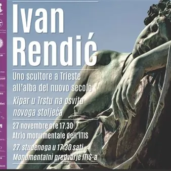

da ven 27 nov a dom 28 feb
Mostra "Ivan Rendić:uno scultore a Trieste all’alba del nuovo secolo"
Il 27 novembre, in occasione del 95° anniversario della morte di Ivan Rendić si inaugura la mostra dedicata a uno dei protagonisti della scultura tra Ottocento e Novecento. La mostra, curata dal prof. Luca Bellocchi, nasce con un duplice obiettivo: celebrare la figura di Rendić…
 Indicazioni
Indicazioni
- Costi e prenotazioni
- Costo non indicato · Prenotazione non indicata
- Programma
- Programma da verificare. Apri la fonte ufficiale per orari e possibili aggiornamenti.
- In caso di maltempo
- Nessuna indicazione specifica pubblicata.
- Note
- Acquisito automaticamente dalla fonte.
L’EVENTO
Descrizione completa
Il 27 novembre, in occasione del 95° anniversario della morte di Ivan Rendić si inaugura la mostra dedicata a uno dei protagonisti della scultura tra Ottocento e Novecento. La mostra, curata dal prof. Luca Bellocchi, nasce con un duplice obiettivo: celebrare la figura di Rendić, profondamente legata alla storia artistica della città, e valorizzare il patrimonio scultoreo custodito dall’ITIS, luogo in cui arte, memoria e filantropia si intrecciano da più di un secolo. Mostra Ivan Rendić all' ItiIvan Rendić nasce il 27 agosto 1849 a San Pietro (Supetar), sull’isola di Brazza (Brač), allora territorio dell’Impero austro-ungarico. Figlio di uno scalpellino, cresce in un ambiente in cui la lavorazione della pietra rappresenta una tradizione secolare. La sua formazione inizia a Trieste, dove è allievo dello scultore e intagliatore Giovanni Moscotto, prosegue poi all’Accademia di Venezia e sotto la guida dello scultore toscano Giovanni Duprè, uno dei maggiori esponenti della scultura italiana dell’Ottocento.
Trieste rappresenta per Rendić una tappa fondamentale: vi arriva ancora giovanissimo, attratto dalla vivacità del porto e dal carattere internazionale della città, e qui sviluppa la propria sensibilità artistica. Dopo diversi anni di attività, vi si stabilisce quasi ininterrottamente dal 1881 al 1921, diventando uno dei protagonisti della vita culturale cittadina. La sua opera è l'espressione dell'incontro originale tra culture diverse: formazione italiana, radici dalmate, suggestioni bizantine e influenze mitteleuropee. Tutto è confluito in uno stile personale che lo ha reso interprete della scultura del suo tempo.
Rendić inizia il proprio percorso nella tradizione della statuaria verista e romantica, molto apprezzata dalla committenza pubblica e privata dell’epoca, ma sviluppa progressivamente una ricerca più libera, vicina alle sensibilità della Secessione e del Liberty.
Diventa autore di ritratti, monumenti pubblici, opere decorative e soprattutto di straordinari complessi funerari, nei quali fonde scultura, architettura e arti applicate. Il suo stile, da lui stesso definito “lunatico”, si caratterizza per un ricco universo simbolico popolato da elementi ricorrenti come la luna, il gufo, la civetta, la salamandra e il papavero stilizzato. La sua produzione si diffonde lungo tutta la costa adriatica: oltre che a Trieste lavora a Fiume, Zagabria, Spalato e in numerose località della Dalmazia, diventando una delle figure più rappresentative di quelle terre di confine dove si incontrano culture diverse. Proprio a Trieste, Rendić lascia numerose testimonianze della sua arte. Tra le opere pubbliche più significative figurano l’Allegoria della Navigazione nell’ex Palazzo del Lloyd Austriaco, oggi sede della Regione Friuli Venezia Giulia, in Piazza Unità d’Italia; l’Allegoria della Previdenza nel Palazzo delle Assicurazioni Generali; la monumentale Villa Jakić in stile russo-bizantino, conosciuta anche come Casa delle Cipolle, a Barcola. Particolarmente importante è anche la sua produzione funeraria, conservata nei principali cimiteri cittadini. Attraverso monumenti come le tombe Ralli, Zuzach, Pantos Afenduli, Ancić, Colombis, Cossovich e Kalister, Rendić diede vita a opere nelle quali il marmo, il bronzo, il mosaico e gli elementi decorativi dialogano creando veri e propri racconti visivi dedicati alla memoria. Le sue opere testimoniano il rapporto con la borghesia mercantile triestina e con quelle famiglie che, attraverso la filantropia e il sostegno alle istituzioni assistenziali, contribuirono allo sviluppo della città.
La mostra trova la sua naturale collocazione negli spazi dell’ITIS, che custodisce una straordinaria raccolta di busti, statue e lapidi. La galleria monumentale della storica Pia Casa dei Poveri rappresenta un vero e proprio “pantheon” della filantropia triestina, dove sono conservati i ritratti dei protagonisti della vita economica e sociale della città. Questo patrimonio scultoreo racconta non solo la storia dell’arte locale, ma anche quella di una comunità che ha saputo intrecciare assistenza, solidarietà e cultura.
La mostra in allestimento per oltre tre mesi. L’esposizione sarà accompagnata da un programma di eventi collaterali realizzati in collaborazione con l’Università degli Studi di Trieste, con incontri, approfondimenti e momenti di confronto dedicati alla figura di Ivan Rendić, alla scultura tra Otto e Novecento e al patrimonio storico-artistico dell’ITIS. Un progetto che fa dialogare arte, ricerca e territorio, riscoprendo la figura di un artista capace di rappresentare la complessità culturale dell’Adriatico e valorizzando quei valori di cura, inclusione, memoria e solidarietà che ancora oggi costituiscono la missione dell’ITIS.
Ingresso libero.
IL PROGRAMMA
Programma e orari
Appuntamenti raccolti dalle fonti elencate. Dove manca un orario, non è ancora disponibile in questa scheda.
Programma pubblicato
- Dal 2026-11-27 al 2027-02-28
INFORMAZIONI UTILI
Prima di partire
- Controllare la fonte prima di partire.
ORGANIZZAZIONE